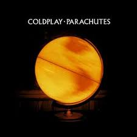

lyric page: Trouble
Louis' webiste
My favorite band: Coldplay
They have their great official website
Their first well know album would definitely be "Parachutes". I especially like Don't Panic, High Speed, Sparks, We Never Change, Yellow

- Brit Awards:2001-British Album of the Year
- GAFFA Awards Denmark (Prisen):2000-International Album of the Year
- Grammy Awards:2002-Best Alternative Music Album
- Mercury Prize:2000-Mercury Prize
- NME Awards:2001-Best Album
- Official Number 1 Award:2000-Official Number 1 Album
- Official Number 1 Award:2000-Official Number 1 Rock/Metal Album
- Q Awards:2000-Best Album